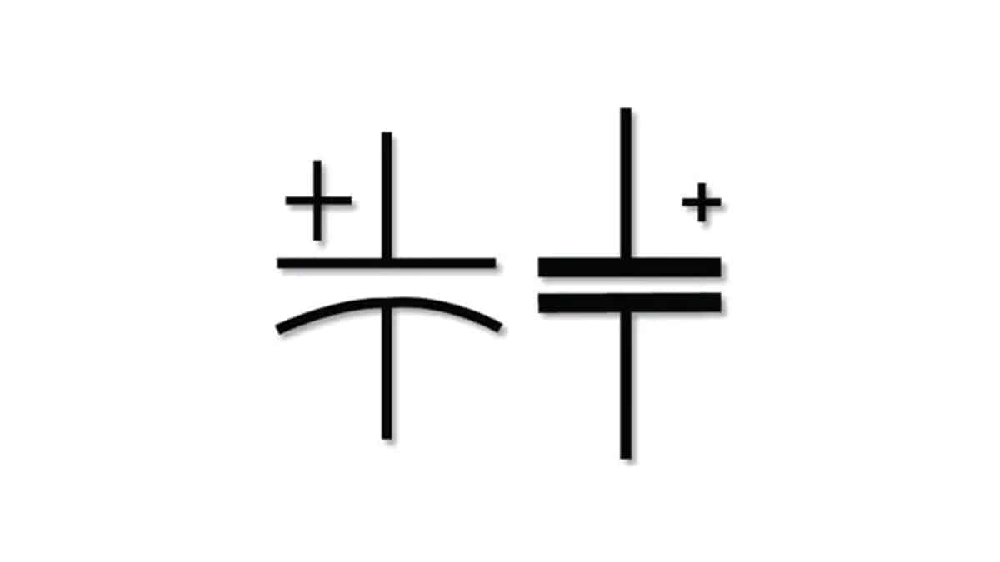

Capacitor
What is a Capacitor?
A Capacitor is a passive component that has the ability to store the energy in the form of potential difference between its plates. It resists a sudden change in voltage. The charge is stored in the form of potential difference between two plates, which form to be positive and negative depending upon the direction of charge storage.
A non-conducting region is present between these two plates which is called as dielectric. This dielectric can be vacuum, air, mica, paper, ceramic, aluminum etc. The name of the capacitor is given by the dielectric used.
Symbols and Units
The standard units for capacitance is Farads. Generally, the values of capacitors available will be in the order of micro-farads, pico-farads and nano-farads. The symbol of a capacitor is as shown below.
The Capacitance of a capacitor is proportional to the distance between the plates and is inversely proportional to the area of the plates. Also, the higher the permittivity of a material, the higher will be the capacitance. The permittivity of a medium describes how much electric flux is being generated per unit charge in that medium. The following image shows some practical capacitors.
When two plates having same area A, and equal width are placed parallel to each other with a separation of distance d, and if some energy is applied to the plates, then the capacitance of that parallel plate capacitor can be termed as −
C = ε0εrdAC = ε0εrdA
Where,
C = Capacitance of a capacitor
ε0ε0 = permittivity of free space
εrεr = permittivity of dielectric medium
d = distance between the plates
A = area of the two conducting plates
Working of a Capacitor
A Capacitor can be understood as a two-terminal passive component which stores electrical energy. This electrical energy is stored in electrostatic field.
Initially, the negative and positive charges on two plates of the capacitor are in equilibrium. There is no tendency for a capacitor to get charged or discharged. The negative charge is formed by the accumulation of electrons, while the positive charge is formed by the depletion of electrons. As this happens without any external charge given, this state is electrostatic condition. The figure below shows the capacitor with static charges
The accumulation and depletion of electrons according to the varying positive and negative cycles of the AC supply, can be understood as “current flow”. This is called as Displacement Current. The direction of this current flow keeps on changing as this is AC
Charging of a Capacitor
When an external voltage is given, the electric charge gets converted into electrostatic charge. This happens while the capacitor is charging. The positive potential of the supply, attracts the electrons from the positive plate of the capacitor, making it more positive. While the negative potential of the supply, forces the electrons to the negative plate of the capacitor, making it more negative. The figure below explains this.
During this process of charging, the electrons move through the DC supply but not through the dielectric which is an insulator. This displacement is large, when the capacitor starts to charge but reduces as it charges. The capacitor stops charging when the voltage across capacitor equals the supply voltage.
Dielectric behavior
As the charges deposit on the plates of the capacitor, an electrostatic field is formed. The strength of this electrostatic field depends upon the magnitude of charge on the plate and the permittivity of the dielectric material. Permittivity is the measure of dielectric whether how far it allows the electrostatic lines to pass through it.
The dielectric is actually an insulator. It has electrons in the outer most orbit of the atoms. Let us observe how they get affected. When there is no charge on the plates, the electrons in the dielectric move in circular orbit. This is as shown in the figure below.
If the charge increases further, the orbits expand more. But if it still increases, the dielectric breaks down shorting the capacitor. Now, the capacitor being fully charged, it’s ready to get discharged. It is enough if we provide a path for them to travel from negative to positive plate. The electrons flow without any external supply as there are too many number of electrons on one side and barely any electrons on the other. This imbalance is adjusted by the discharge of the capacitor.